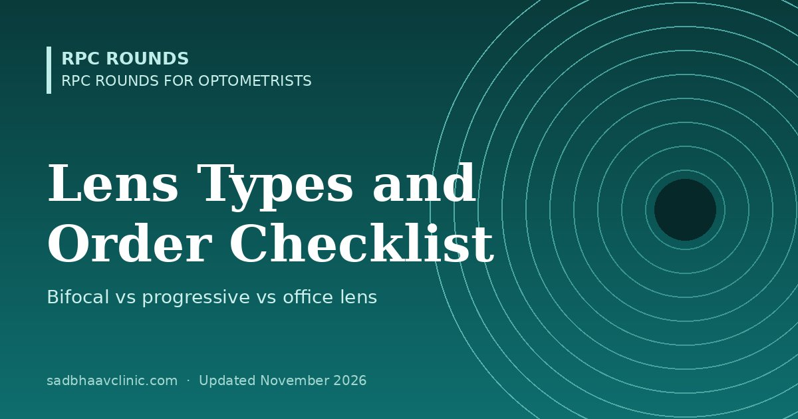

Last updated: November 2026
RPC Rounds for Optometrists · B.Optom study guide
A counter guide for opticians, optometrists and ophthalmologists who dispense glasses in their own practice. It compares every common spectacle lens type side by side, shows which suits which patient, lists the measurements each type needs, and gives a checklist for taking the order so that the glasses are right the first time.
| Lens type | What it gives | Best for | Drawbacks | Must measure |
|---|---|---|---|---|
| Single vision (distance) | One power for distance | Myopes, hyperopes and astigmats under 40; drivers; a second pair for presbyopes | Presbyopes need another pair to read | Distance PD (monocular for high powers), optical centre height |
| Single vision (near / readers) | One power for about 33–40 cm | Presbyopes who read for long periods; low budget | Distance is blurred; must be taken off to look up | Near PD (about 3 mm less than distance PD), optical centre height |
| Ready-made readers | Same sphere both eyes, standard PD | Emergency or spare pair for patients with no astigmatism or anisometropia | Wrong PD and no cylinder: eyestrain in many | Check that the sphere and PD suit the patient before recommending |
| Bifocal: flat-top (D-segment 25, 28 or 35 mm) | Distance above, near in a segment with a visible line | First bifocal, budget, high adds, people who cannot adapt to progressives | Visible line; no intermediate zone; small image jump | Distance PD, segment height, near inset |
| Bifocal: round (fused, often called Kryptok) | Round near segment | Low cost, very old wearers used to it | More image jump than flat-top; narrow reading area at the top | Distance PD, segment height |
| Bifocal: executive (Franklin) | Full-width segment across the lens | Desk work needing a wide near zone; accommodative esotropia in children | Heavy and thick; very visible line | Distance PD, segment height |
| Bifocal: blended (invisible) | Segment edge polished out | Patients who want no visible line but cannot afford or adapt to progressives | Blurred band where the line was; not for drivers who look down often | Distance PD, segment height |
| Trifocal (7×28, 8×35) | Distance, intermediate and near zones | Adds of +2.00 or more needing arm's-length vision (computer, music, shop counter) | Two lines; image jump at each | Distance PD, height of the top of the intermediate segment |
| Progressive (general purpose) | Smooth change from distance through intermediate to near; no line | Most presbyopes who want one pair for everything | Blur and swim at the sides; adaptation 1–2 weeks; costly; needs accurate fitting | Monocular PD, fitting height, frame size; for freeform designs also vertex, tilt and wrap |
| Progressive: short corridor | Same, with a shorter power change | Small, shallow frames | Narrower zones | Check the design's minimum fitting height |
| Office (occupational / degressive) | Wide intermediate and near zones, little or no distance | Computer users, doctors, tailors, cashiers, readers at a desk | Not for walking or driving | Near PD and heights as the design requires; agree the working distances |
| Double-segment (e.g. Double-D) | Near segment at the bottom and another at the top | Electricians, mechanics, librarians, painters who look up at near objects | Two near zones only; niche | Distance PD and both segment heights |
| Anti-fatigue (small near boost) | Single vision with a low add (+0.40 to +0.88) at the bottom | Pre-presbyopes with screen strain once refraction and binocular vision are normal | Evidence is limited; not a substitute for treating binocular problems | Monocular PD, fitting height |
| Myopia-control lenses (defocus designs) | Central distance correction with a ring of defocus | Children with progressing myopia, prescribed by the eye care practitioner | Must be centred on the pupil and worn full time; cost (see below) | Monocular PD and pupil height in a well-fitting frame |
| Patient | First choice | Why |
|---|---|---|
| First-time presbyope, 40–48 years, low add | Progressive | Adapts most easily when the add is low |
| Long-time bifocal wearer, add +2.50, happy | Keep the bifocal | Switching late in life with a high add has the highest failure rate; offer a progressive only if the patient asks |
| Heavy computer or desk worker | Office lens as a second pair (or as the main pair at work) | Wider intermediate zone than any general progressive |
| Professional driver | Single-vision distance or a progressive with a wide distance zone | Clear far and side vision |
| Older person at risk of falls | Single-vision distance glasses for walking outside, plus readers | Lower segments of bifocals and progressives blur the ground and steps |
| High cylinder or oblique axis | Freeform (digital) progressive, or bifocal | Standard progressives add their own side astigmatism |
| Anisometropia of 1.50 D or more | Single vision, or a bifocal with slab-off; refer if unsure | Vertical prism imbalance when reading through the lower lens |
| Child with accommodative esotropia | Executive or large flat-top bifocal, segment top bisecting the pupil | The child must read through the add without effort |
| Very small, shallow frame chosen | Short-corridor progressive, or advise a deeper frame | A standard corridor will not fit; near zone is cut off |
| Patient who failed a progressive | Check measurements and fit first; then try office lens or bifocal | Most failures are fitting errors, not the patient |
Every progressive has unwanted astigmatism (blur and swim) at the sides of the corridor and near zone. For a given add, the total amount cannot be removed (the Minkwitz theorem); designers can only move it. That is why names such as "wide", "extra wide" and "premium" exist: they describe how much clear zone you get and how far the blur is pushed to the edges. Each company uses its own names, so compare designs by their zone widths, not their labels.
| Type | How it is made | What the patient notices | Best for | Price |
|---|---|---|---|---|
| Standard (conventional) | Progressive surface moulded on the front of a semi-finished lens; the same design for everyone | Narrower intermediate and near zones; more swim at the sides | Low budget; low adds; easy adapters | Lowest |
| Short corridor | Power change compressed into a shorter height (minimum fitting height often 14–15 mm) | Reaches the near zone with less lowering of the eyes; zones slightly narrower | Small or shallow frames | Similar to standard or wide |
| Wide (digital / freeform back surface) | Design cut on the back surface by computer-controlled (freeform) machining, closer to the eye | Wider, clearer zones and less swim than standard | Most first-time and regular wearers | Middle |
| Extra wide / premium | Freeform on one or both surfaces with an optimised design; often several design variants | Widest intermediate and near zones; least distortion | Higher adds, computer users, previous adaptation problems | High |
| Personalised (position of wear) | Freeform design calculated for the wearer's vertex distance, pantoscopic tilt, wrap, frame shape and sometimes reading distance and head or eye movement | Most natural vision, especially in wrapped or tilted frames | Demanding wearers; high or oblique cylinders; anisometropia | Highest |
| Patient | Suggested progressive |
|---|---|
| First-time wearer, add +1.00 to +1.50, normal frame | Wide (freeform), soft design |
| Tight budget, low add, happy to adapt | Standard |
| Small or shallow frame | Short corridor (wide version if budget allows) |
| Add +2.25 or more, or long hours on a computer | Extra wide, or a general progressive plus an office lens |
| High or oblique cylinder, anisometropia, wrapped frame | Personalised (position of wear) |
| Failed with a standard progressive (after checking the fit) | Wide or extra wide with a soft design, or an office lens |
How to explain it at the counter: show the patient the zone diagram from the lens company or the one above, and say: "All progressives have blur at the sides. The more advanced lenses make the clear window wider and push the blur further away, so you move your head less."
These lenses correct distance vision through a central clear zone and add a pattern in the surrounding lens that slows eye growth, usually by adding peripheral myopic defocus or by reducing peripheral contrast. They are prescribed by the eye care practitioner for children whose myopia is progressing; the optician's job is to fit them exactly. Results below come from the main trials against single-vision lenses; real-world results are usually smaller, and several trials were funded by the manufacturers.
| Design (example) | How it works | Main trial result | Notes |
|---|---|---|---|
| DIMS: Defocus Incorporated Multiple Segments (Hoya MiyoSmart) | About 9 mm central clear zone; a honeycomb of small lenslets of +3.50 D in a ring around it | 2-year RCT: progression slowed by about 52% and axial elongation by about 62% | Benefit continued in long-term follow-up; most widely studied |
| HAL: Highly Aspherical Lenslets (Essilor Stellest) | About 9 mm central zone; 11 rings of aspherical lenslets creating a volume of myopic defocus | 2-year RCT: progression slowed by about 55%, more in children wearing them 12 hours or more a day | Wearing time matters; a stronger version (HALT MAX) is being studied |
| DOT: Diffusion Optics Technology (SightGlass) | Tiny dots scatter light and lower contrast on the peripheral retina | 12-month results: 0.48 D and 0.26 mm less progression than single vision | Longer-term effect appears smaller; no rebound reported after stopping |
| CARE: Cylindrical Annular Refractive Elements (Zeiss MyoCare) | Rings of cylindrical elements creating peripheral myopic defocus around a central zone | 2-year RCT: about 0.40–0.44 D and 0.17–0.20 mm less progression | Larger effect in older children |
| Executive bifocal with base-in prism | +1.50 D add with 3Δ base-in in each lens, segment top at the lower pupil margin | 3-year RCT: progression roughly halved in fast-progressing children | Cheaper, but cosmetically less popular; works best with near esophoria |
| Progressive lenses (standard) | Reduce accommodative lag at near | Small effect (about 0.2 D over 3 years, COMET) | Not a first choice for myopia control |
Do not undercorrect a myopic child to slow progression: it does not work and may speed it up. Older peripheral-defocus single-vision designs showed no overall benefit.
Fitting myopia-control lenses
For the whole range of options, including atropine, contact lenses, ortho-k and red light, see myopia control in 2026.
Always base the add on the patient's working distance and amplitude of accommodation. The table is only a starting point for a patient with normal accommodation for their age.
| Age (years) | Usual starting add |
|---|---|
| 40–45 | +0.75 to +1.25 |
| 45–50 | +1.25 to +1.75 |
| 50–55 | +1.75 to +2.25 |
| 55 and over | +2.25 to +2.50 (rarely more, except in low vision) |
| Lens type | Horizontal | Vertical |
|---|---|---|
| Single vision distance | Binocular PD, or monocular PD for powers over about ±4.00 D or any prism | Optical centre at the pupil, lowered about 1 mm for each 2° of pantoscopic tilt |
| Single vision near | Near PD (about 3 mm less than distance PD at 40 cm) | Optical centre about 2–5 mm below the pupil in primary gaze |
| Flat-top or round bifocal | Distance PD; segment inset about 1.5–2 mm per eye | Segment top at the lower lid margin (general); 1–2 mm lower for those who walk a lot; higher for heavy readers |
| Executive bifocal for children | Distance PD | Segment line bisecting the pupil (or at the lower pupil margin) |
| Trifocal | Distance PD | Top of the intermediate segment at the lower pupil margin |
| Progressive | Monocular PD to each pupil centre (use a pupillometer or measure on the frame) | Fitting height from pupil centre to the lowest point of the lens rim, with the frame adjusted on the face; must meet the design's minimum (often 14–18 mm; check the lens chart) |
| Office lens | Monocular near or distance PD, as the design asks | As the design asks; usually at the pupil or a set distance from it |
At the counter, before the patient leaves
At delivery
| Complaint | Most likely cause | What to do |
|---|---|---|
| Progressive: distance blurred, patient lowers the chin | Fitting cross too high, or distance power too plus | Remeasure height on the adjusted frame; check the prescription |
| Progressive: tilts head back to read | Fitting height too low, add too weak, or frame sitting low | Adjust the frame up; remeasure; check the add |
| Progressive: reading area narrow on one side | Monocular PD wrong, or frame not centred | Check each PD; straighten the frame |
| Progressive: swimming at the sides | Normal early on; or wrong tilt, wrap or design for the patient | Reassure for 1–2 weeks; check fit; consider a softer design |
| Bifocal: line gets in the way when walking | Segment too high | Lower the segment (remake) or teach to lower the chin when walking |
| Bifocal: has to lift the chin to read | Segment too low | Raise the frame or remake with a higher segment |
| Floor seems tilted or curved | New or changed cylinder or axis; base curve changed | Check against the old pair; refer back to the prescriber if the change is large |
| Double vision or pulling | Unwanted prism from wrong PD or centration | Measure optical centres against the PD; check tolerances |
Practical pearls
Where students slip
Related: Spectacle Lens Designs: Aspheric, Bifocals and Progressive Lenses (Fitting and Troubleshooting), Frame Selection and Spectacle Fitting: Boxing System, PD, Fitting Height, Tilt and Wrap, Spectacle Dispensing Reference: PD, Fitting Height, Tolerances, Spectacle Non-Tolerance: A Step-by-Step Troubleshooting Guide for Optometrists, Sunglasses, Polarised and Photochromic Lenses, Tints and Night-Driving Glasses: A Practical Guide. Back to the optometry curriculum.
📘 Want more exam-ready material? See Most Commons in Ophthalmology on Kindle, or browse all my books.
Looking for an eye specialist in Ahmedabad? Eye Department at Sadbhaav or book a consultation with Dr. Dhaval Patel.